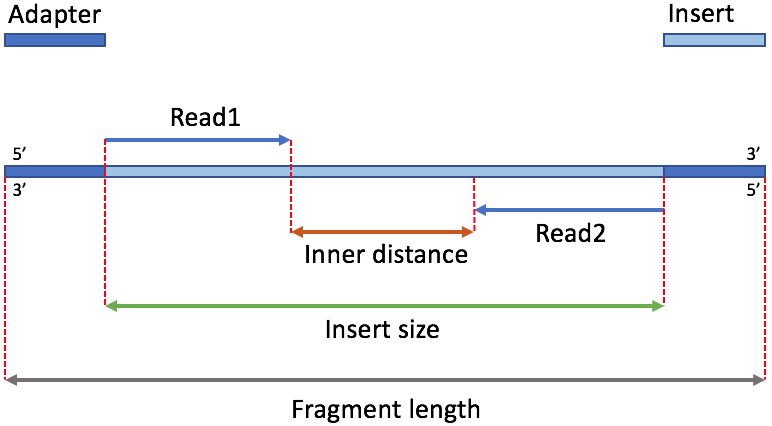
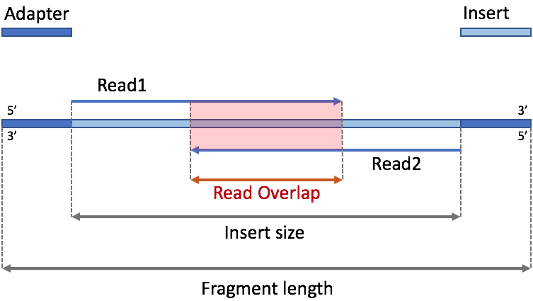
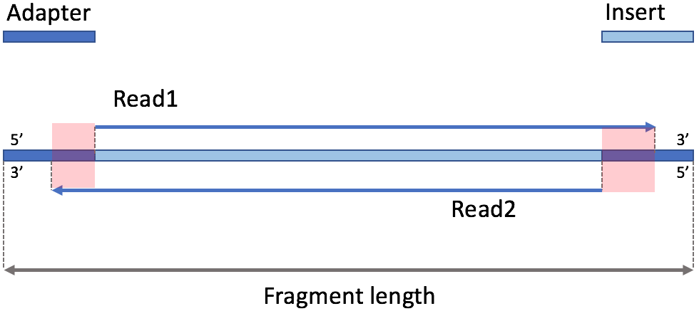

转载自微信公众号”碱基矿工“：****一篇文章说清楚什么是“插入片段”？****
插入片段到底是什么。
可能对于许多生信肉鸟来说，并不觉得这是一个问题，有时太过熟悉觉得显而易见，最后反而是视而不见。但殊不知对于很多新手而言，特别是完全不知道NGS技术的跨界新手来说，却不是一个简单的问题（其实把简单的问题搞明白也并非都是一件容易的事情）。相信许多人第一次看到这个东西的时候心中或多或少都会有类似的困惑，我曾经也有过这样的疑问，我不明白什么是“插入片段”，甚至不明白为什么会有“插入片段”这种词。所以，这一篇文章我们就主要来说说什么是二代测序的插入片段以及它的特点都有哪些。
1、什么是插入片段（Insert）？
“插入片段”，英文术语中用“Insert”来表达。这个术语其实由来已久，在NGS技术发展起来之前就已经存在了，那是一个利用大肠杆菌（E.coli）作为容器进行DNA克隆的时代。Insert是当时的一个标准词，指的就是把一段DNA序列植入到大肠杆菌的基因组中，利用大肠杆菌的自我增殖和克隆达到扩增这一个DNA序列的目的。而这个被植入的片段就叫插入片段，以这样的词语形象表达出它是一个插入在大肠杆菌中的外来DNA序列。
在NGS中，虽然扩增这个事情依然是刚需，但载体却早以不再是大肠杆菌，而是其它的序列扩增技术（下文详述），不过由于形式有些类似，这个词也就一直被沿用下来了。
那么，在二代短序列高通量测序中这个插入片段具体是怎么样的呢？要更好地说清楚它，不得不再提一下测序的过程。
测序的第一步是构建适当的DNA测序文库。这个文库的构建步骤一般如下：
利用超声或者酶切技术把那些从细胞中提取出来的一堆乱糟糟DNA进行打断，然后末端修复，把分叉的末端序列修平；
电场跑胶，专业术语是凝胶电泳——DNA分子在电场里“游泳”。由于不同长度的DNA分子片段所带电量（它们都带负电荷）不同，那么在电场作用下，有些就跑得快有些就慢，一段时间之后不同长度的DNA片段就在电场中分开了；
在2的基础上，挑选出特定长度的DNA序列——比如我们挑选上图中400bp长度的序列，它们就是我们要测序的主体序列，也就是要被植入的“插入片段”。只不过在二代测序中，不是植入到大肠杆菌里了，而是在它们的两头分别加上测序用的接头（adapter），然后进行（PCR）序列扩增，最后再上机测序，这个加完接头之后的样子，如图2所示。
这里整个片段（Fragment）中，两端深蓝色部分是测序接头（adapter），中间浅蓝色是我们的DNA序列，也就是所谓的插入片段，我们所说的插入片段长度（Insertsize）指的就是这个浅蓝色部分的长度。它两端所加的接头主要有两个作用：
- 第一个是类似于“手”的作用，很重要，目的是让我们的DNA序列能够通过这些接头和测序芯片上的“测序位”相互“抓握”，并固定好完成测序过程；
- 第二个作用是样本区分，这个发生在多样本混合在同一个机器上进行测序时——也就是通常所说的pooling测序，才需要用到。
当然测序接头的结构其实要比图中更复杂一点的，但在这里我为了表述上的方便就做了简化，只画作一个。
另外，中间浅蓝色插入片段的这一个序列，它的真实长度，我们其实是没办法精确知道的。因为我们没法直接去数这些片段上的碱基个数，只能通过测序。但二代短读长测序技术，又只能从这个淡蓝色片段的一个末端或者两个末端开始测，比如图中是Pair-End(PE)测序*，测的是两个末端，得到的序列是Read1和Read2，很多时候Read1+Read2的长度都是小于这个插入片段的长度的。在不测通的情况下，它中间一定有一段不明长度的序列我们无法测到，这段不被测到的序列有时被称为Inner序列，它的长度是Read1和Read2相距的距离（图2中红色双箭头所指的序列）。
*在二代短读长测序（Illumina或者BGISEQ系列等）时，无论是WGS、WES、WGBS、RRBS还是RNAseq，都有两个不同的测序类型可以选择：单末端测序（Single End，简称SE）和双末端测序（Pair-End，简称PE）。
2、Read1 和 Read2发生重叠
Read1和Read2有时是会发生重叠的，这个重叠并不是指两个序列相连了（测序的时候，Read1和Read2是分开生成的，而不是两端同时开始测，所以不可能相连），而是相互测到了对方覆盖的片段了，如下图。这是怎么发生的呢？有两种情况会导致这个现象的发生：
- 第一，测序读长较长，比如MiSeq的测序读长可以到达250bp，PE测的话，Read1+Read2就达到500bp，如果我们的建库序列长度是400bp，那么就会被测通，而且中间有约100bp是Read1和Read2重叠测到的区域（图3中的红色Overlap区域）；
- 第二，建库时带来的误差。虽然我们在构建测序文库的时候都希望能够挑选处理的插入片段，它们的长度能够基本一致，但其实是做不到的，一定存在偏差。有时建库质量较差的时候，偏差就更大了，比如下图是一个真实数据的插入片段长度分布图，这不是一个很好的建库结果，我们可以看到它的左端有一大段长度都在200bp以下，甚至还低至50bp。那么如果我们是100PE进行测序的话，这部分的序列也同样有重叠的现象发生。
Read重叠会给我们的数据分析带来不利影响吗？基本不会，而且对于第二种情况，往往也还不需要做额外的处理，正常分析就好。对于第一种情况，很多时候是故意要这么设计的（当然不一定要用MiSEQ，其它的也行，只要调节好插入片段和Read读长即可）。在有些数据分析中，我们会故意挑选短的插入片段，确保Read1和2可以重叠，比如在基因组组装的场景中，设计梯度文库的时候，一般都会有一个小长度文库，目的就是把这个小长度文库的Read1和Read2连起来，合成一条超级Read，这样可以协助进行序列构建和补洞，把物种基因组装的更好。
另外，合并这类重叠的Read也有一些不错的工具可以使用，比如pandaseq
3、测通
除了上述的Read重叠之外，还有一种特别的情况，叫做：测通。它是Read重叠的进一步延伸，原因是相同的，就是有些插入片段长度太短了，导致Read能够完全跨越整个插入片段，比如图4里，所有长度小于100bp的插入片段，它们都会被测通，而且还会直接测到片段两端的接头序列。如下图5，就是一个序列测通的示意图，这是一个我们不愿意看到的现象，同时它是Read中存在接头污染的主要来源。
这也是为什么接头序列一般都是出现在Read的末尾的原因，我们需要cut adapter也是这么来的。
4、插入片段长度是否能反映测序质量？
虽然，插入片段在跑胶之后选择出来时，其长度存在不可避免的误差，会有波动，甚至有时波动还不小，但它不能反映测序质量（这里排除meta-pair的情况）。因为测序质量并不直接受插入片段长度所影响，而是受试剂、测序芯片、光学相机、机器运行情况、实验室环境（地震、曝晒）等更加复杂的系统和外部因素所决定的。
5、Pair-End和插入片段长度的作用：改善变异检测
虽然二代短读长测序技术，获得不了超长的Read读长，但是双末端测序(Pair-End)获得的Read1和Read2包含了三个非常有用的关系信息，分别是：彼此相连，距离和序列方向。这些信息是基因组变异检测特别是结构性变异检测的关键信号。我其实在《一篇文章说清楚基因组结构性变异检测的方法》中详细谈到了如何利用Read Pair(也就是PE信息)来进行变异检测的方法，这里就不再赘述了，大家如果不了解可以移步过去看看，总之围绕它可以检测多种不同类型的结构性变异如下：